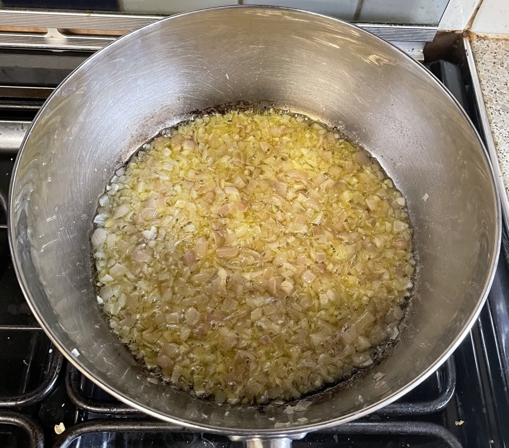

Pasta puttanesca
- Heat until butter melts and foaming subsides
- Add and heat for 6 mins, stirring frequently
- 1 onion or 3 shallots diced
- Add and heat for 3 mins
- 8 anchovies chopped
- 3 cloves garlic sliced
- ½ tsp chilli flakes
- Simmer for 15 mins to reduce, stirring frequently
- 2 tins tomatoes
- 75g black olives rinsed & quartered
- 3 tbsp capers rinsed
- ¼ tsp sugar
- Add and heat for 5 mins
- 2 small tins tuna drained
- salt (if required)
- black pepper
- Add cooked spaghetti and mix well
- Mix in some pasta cooking water if sauce too thick
- Top with
- fresh parsley chopped (optional)
- parmesan grated (optional)
Serving
Notes
- Made: 30 Dec 2022
- Original recipe: The Food Lab, p698
Pics
